Livorno 2017
È qui che tutto è iniziato: la prima edizione, che ha dato vita al progetto e formato i primi partecipanti, ospitata in una location d’eccezione: l’Acquario di Livorno.
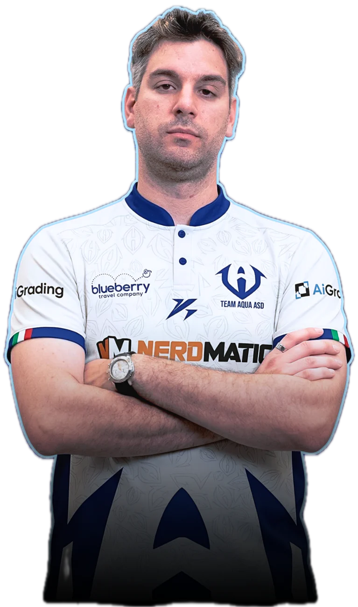
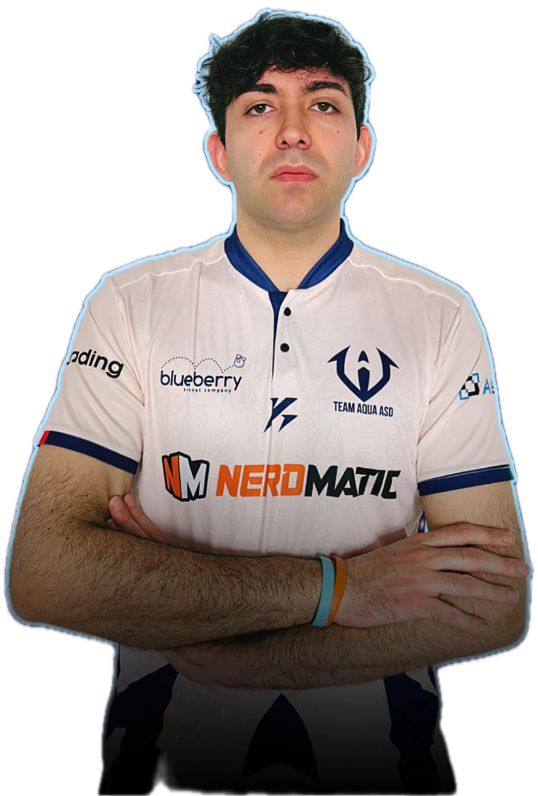
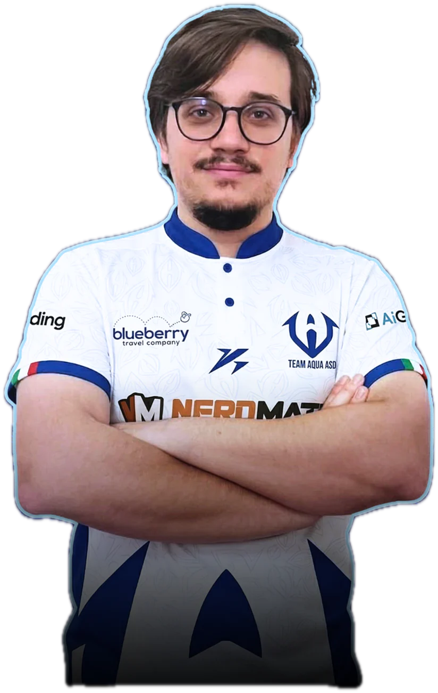
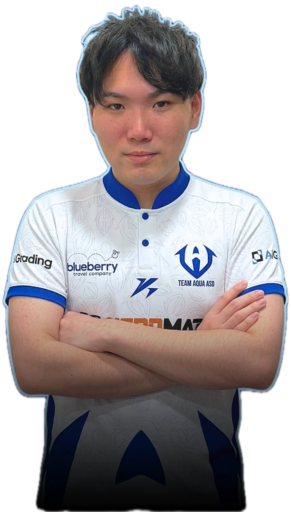
Nel roster il Campione del Mondo VGC 2022
Associazione sportiva dedicata al competitivo Pokémon. Giocatori da palco mondiale, format originali, ricerca e una community che non smette di crescere.
Team Aqua Research Lab (TARL)
La Team Aqua Research Lab è il progetto formativo firmato Team Aqua, pensato per allenare la prossima generazione di campioni del competitivo Pokémon. Ogni anno, la TARL porta in diverse città italiane un’esperienza unica che combina lezioni teoriche, allenamenti pratici e momenti di community, offrendo ai partecipanti la possibilità di imparare direttamente dai pro player del team più titolato in Italia.
Quattro giorni intensivi per entrare nel cuore del competitivo, migliorare le proprie abilità e vivere l’atmosfera del Team Aqua da protagonisti.
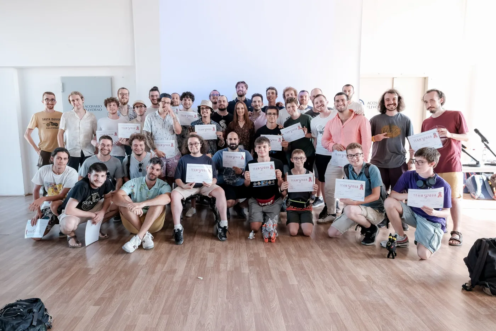
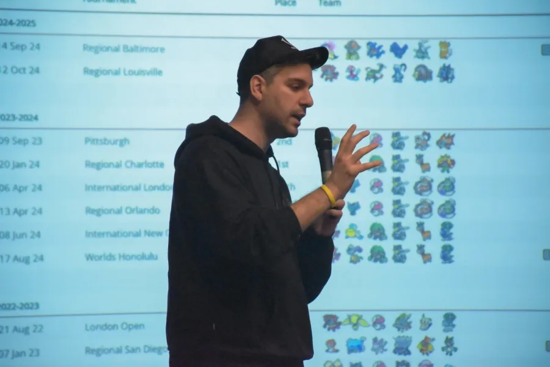
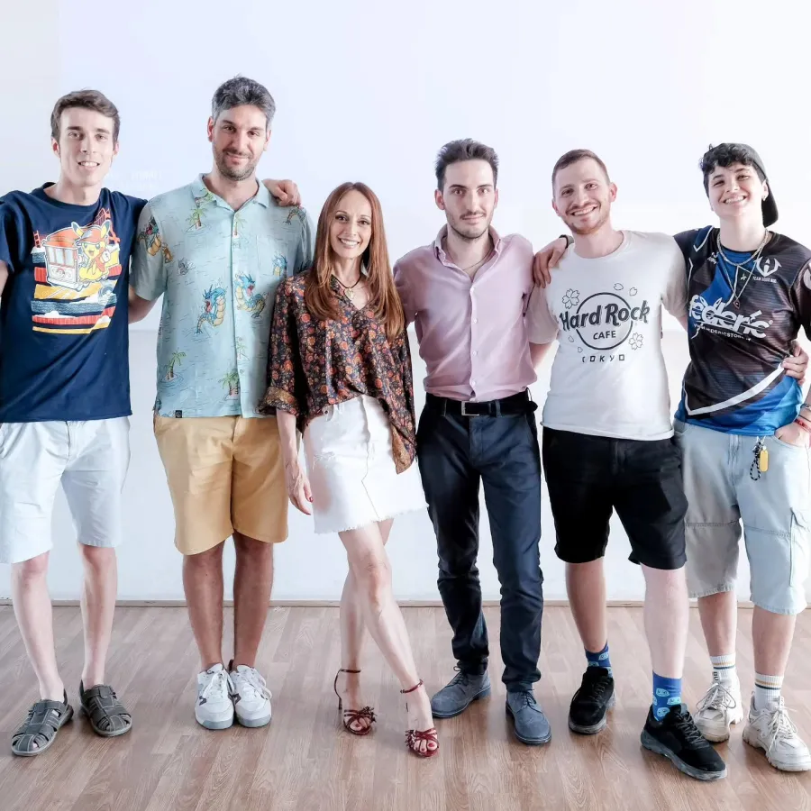
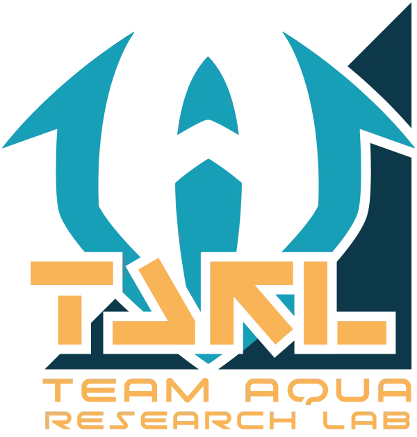
È qui che tutto è iniziato: la prima edizione, che ha dato vita al progetto e formato i primi partecipanti, ospitata in una location d’eccezione: l’Acquario di Livorno.
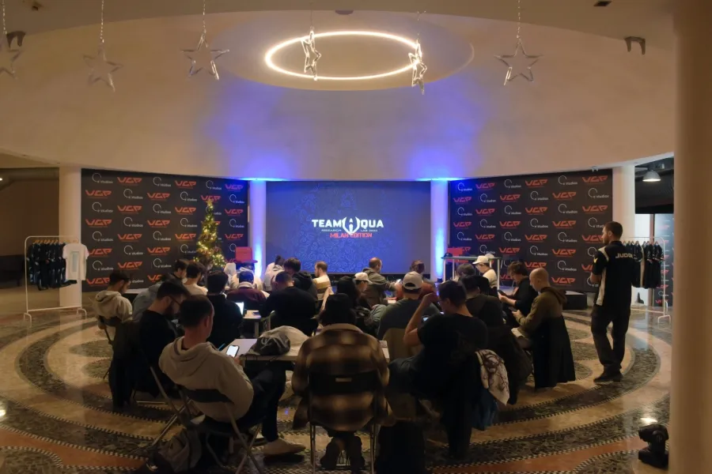
La TARL che ha fatto la storia! Senza dubbio tra le edizioni più speciali della TARL, è stata piena di emozioni, momenti indimenticabili e ospiti di rilievo:
Esperienza straordinaria con Emanuela Pacotto, la voce che ha dato vita a tanti personaggi della nostra infanzia, inclusa la mitica Jessie dell’anime di Pokémon!
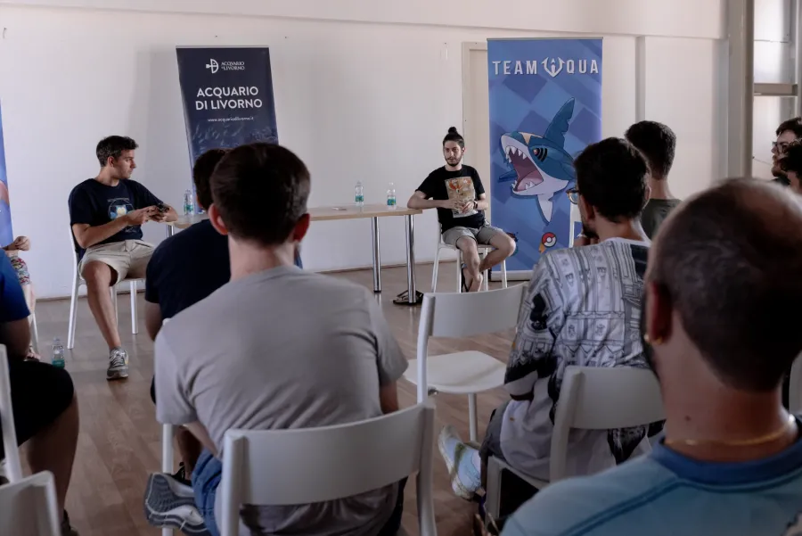
Un successo straordinario: per la prima volta la TARL approda in un’altra città, con lezioni sold out, nuovi format di allenamento e un pubblico in costante crescita.
Le attività si svolgeranno da mercoledì 21 a sabato 24 luglio 2027!
Iscriviti adesso!È un’autentica occasione di vita, che va ben oltre il VGC!
Elena, partecipante alla quattordicesima edizione
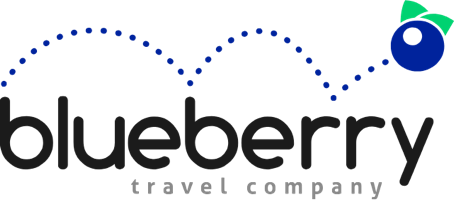
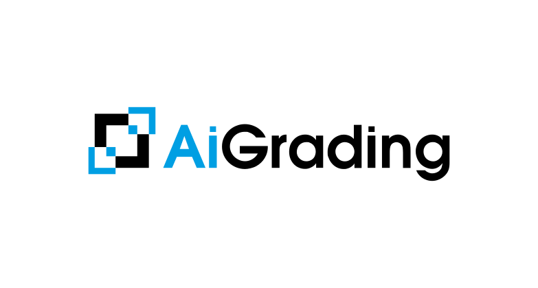
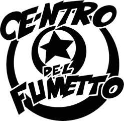
Streaming dei Regionali
Segui le sfide Pokémon più intense direttamente da casa! I Regionali sono il secondo evento per dimensioni, dopo i Campionati Internazionali Pokémon, in termini sia di numero di partecipanti che di Championship Point in palio—noi di Team Aqua garantiamo lo streaming live di questi eventi, con commento, analisi e copertura completa, per permettere a chiunque di seguirli da casa.
Non perdere la prossima diretta!
Dal vivo
Questo è lo spirito del Battle Lab.
Il Battle Lab è un’esperienza unica: un laboratorio interattivo dove i visitatori possono vivere le battaglie Pokémon da un punto di vista nuovo, più maturo, e scoprire la profondità strategica del VGC (Video Game Championships).
Nato in collaborazione con Nintendo e The Pokémon Company, il Team Aqua con il Battle Lab porta il competitivo sin dalla prima edizione alla Milan Games Week del 2024 fuori dallo schermo e lo trasforma in un momento di incontro, formazione e condivisione.
“Pokémon competitivo è come una partita a scacchi: un gioco con una complessità molto profonda, particolarità non così nota agli occhi del pubblico. Il Battle Lab è il luogo dove questo mondo prende vita.”
Angelo Peruzzi, Presidente Team Aqua
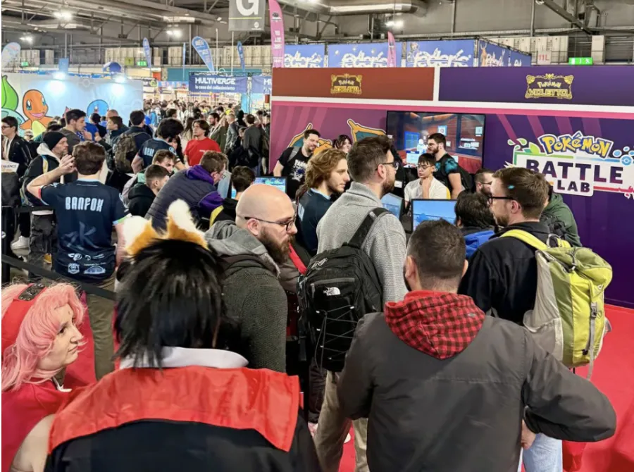
Il primo Battle Lab al mondo realizzato da un team esterno e approvato da Nintendo. Un successo straordinario: oltre 800 visitatori, 3 giorni di eventi, file alle postazioni e centinaia di sfide. Il pubblico ha potuto conoscere il competitivo da vicino, vivendo un’esperienza immersiva che univa professionalità e divertimento.
Il primo Battle Lab al mondo realizzato da un team esterno e approvato da Nintendo. Un successo straordinario: oltre 800 visitatori, 3 giorni di eventi, file alle postazioni e centinaia di sfide. Il pubblico ha potuto conoscere il competitivo da vicino, vivendo un’esperienza immersiva che univa professionalità e divertimento.
Un evento speciale a scopo benefico in collaborazione con la Cooperativa Sociale Onlus Metafora grazie all'iniziativa di un nostro giocatore professionista, Davide Miraglia. Un pomeriggio di gioco e solidarietà, con raccolta fondi e tante emozioni condivise
Invitati da Dario Moccia, il Team Aqua ha introdotto per la prima volta il mondo Pokémon competitivo all’interno del festival. Con un’affluenza record, lo stand Team Aqua è risultato il più visitato dell’evento, a testimonianza del crescente interesse verso il VGC e la qualità delle attività proposte.
A Fiumicino, il Team Aqua ha realizzato il primo Battle Lab interamente brandizzato: scenografie ispirate alla Lega Pokémon, vetrine tematiche e aree espositive. Un evento che ha coinvolto famiglie, curiosi e fan, trasformando il centro commerciale in un vero e proprio raduno Pokémon.
L’ultima tappa, in cui per la prima volta, Pokémon competitivo ha condiviso la scena con il mondo E-Sport di PG Esports, nell’ambito delle finali nazionali del circuito Tormenta di League of Legends. Un simbolo di collaborazione tra diverse realtà del gaming competitivo, culminato con la proiezione sul maxi schermo del Regionale di Francoforte in diretta streaming con il Team Aqua.
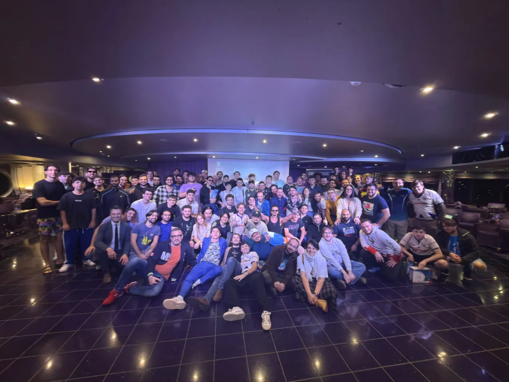
Battle Cruise · 25–29 ottobre 2026
Dal 25 al 29 ottobre 2026, a bordo della MSC Magnifica, il Team Aqua ha realizzato il sogno di quasi 130 giocatori tra VGC e TCG: un torneo su una vera nave da crociera! L'esperienza di cinque giorni è salpata da Genova per poi proseguire verso Marsiglia e Barcellona.
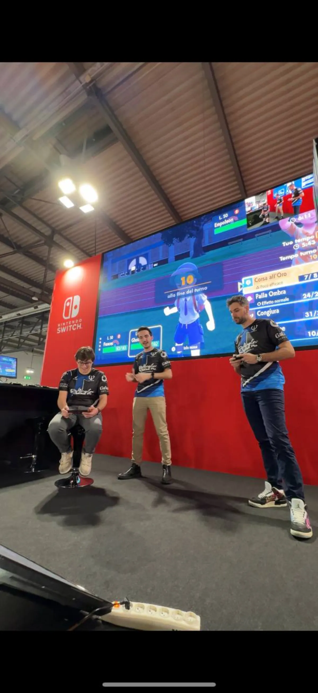
Team Aqua Talk & Exhibition Match
Il Team Aqua Talk & Exhibition Match è un format che unisce divulgazione e competizione dal vivo.
Il Talk è il cuore del format: un incontro dinamico in cui i giocatori, i caster e gli esperti del Team Aqua spiegano il lato più profondo del competitivo Pokémon.
Una sfida dimostrativa proiettata su grande schermo e commentata in tempo reale dallo staff del Team Aqua.
VGC Challenge League
Team Aqua ASD vince la 2026 Season 6 della VCL, la lega a squadre organizzata da Desafío LATAM. Quattro partecipazioni dal debutto nel 2022, tre titoli in bacheca.
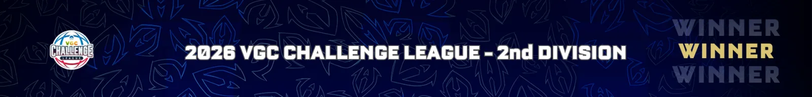
Store ufficiale · Collezione 2026
 CUNHA
CUNHA
Indossa la maglia del tuo giocatore preferito e vesti anche tu i colori del Team Aqua.
Scegli il tuo player

Questa t-shirt celebra tutti i trofei conquistati dal team dalla sua nascita nel 2006 fino a oggi.
29,90 €
Il simbolo del Team Aqua, reinterpretato in chiave artistica.
29,90 €
Una t-shirt essenziale, pulita e immediatamente riconoscibile, pensata per celebrare l’identità del Team Aqua nel 2026.
29,90 €
Vesti i colori del Team Aqua anche fuori dagli eventi.
59,90 €
Porta sempre con te i colori del Team Aqua, dagli eventi alla vita di tutti i giorni.
24,90 €Taglie anche da bambino, dai 4 anni in su, per t-shirt e felpa.
Magazine
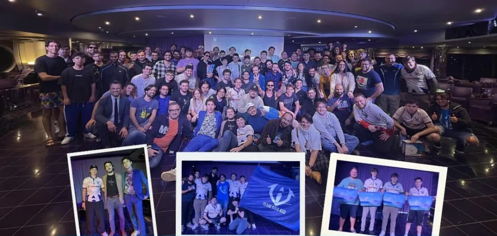
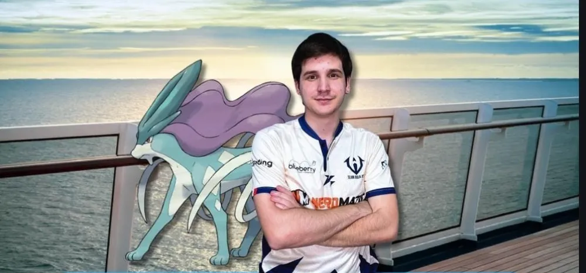
Intervista al nuovo membro della squadra VGC
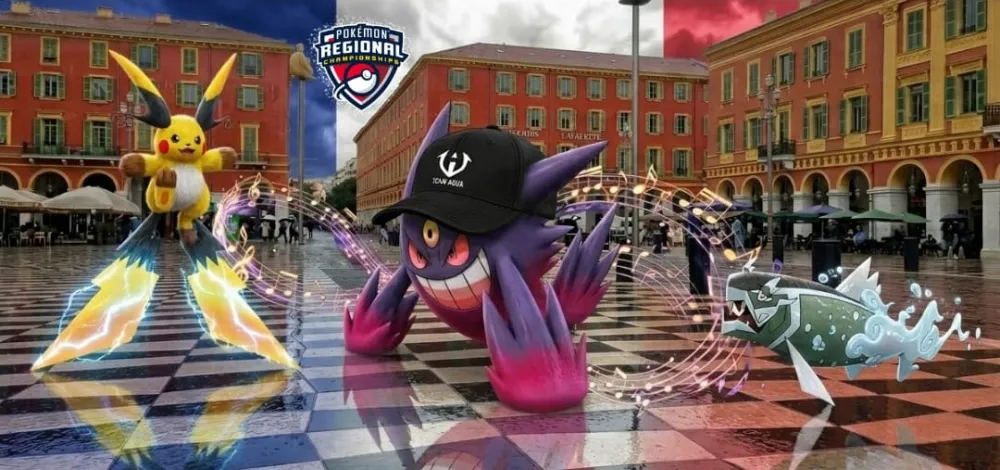
“Pioggia” di cambiamenti per la Reg M-C al Regionale di Nizza
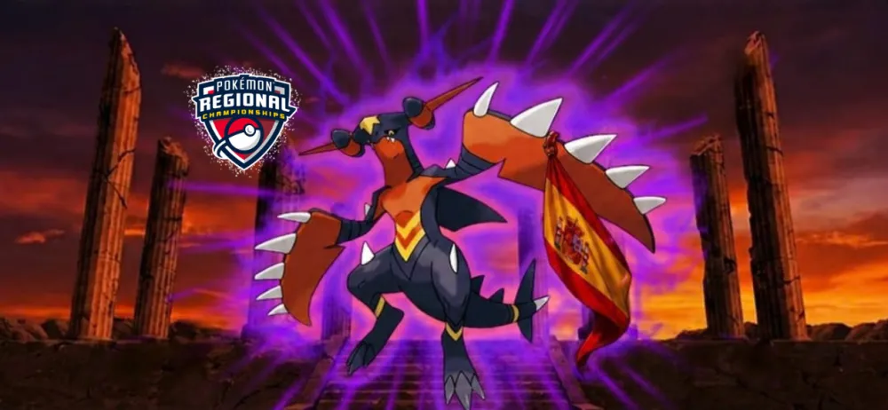
Il Pantheon della Reg M-C nella landa teutonica di Francoforte
Il roster
Matteo, Nicola e Alberto Gini: dal secondo posto ai Mondiali 2011 ai titoli nazionali in Germania e Inghilterra. Scegli un risultato e guarda la squadra che l'ha conquistato.